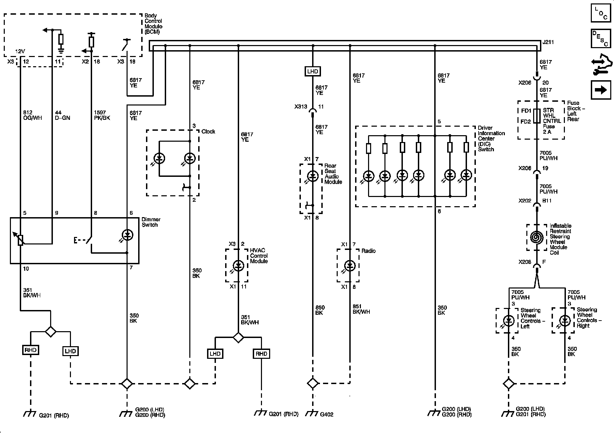
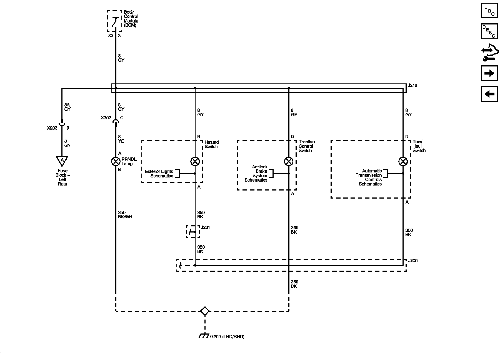
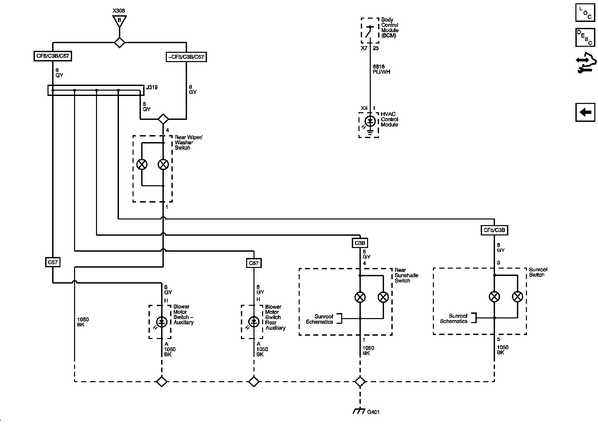

Operation CHARM
: Car repair manuals for everyone.
Home
>>
Cadillac
>>
2008
>>
SRX AWD V8-4.6L
>>
Repair and Diagnosis
>>
Lighting and Horns
>>
Diagrams
>>
Electrical Diagrams
>>
Interior Lights Dimming Schematics
Interior Lights Dimming Schematics
Interior Lights Dimming Schematics
Interior Lamps Dimming Controls

Dimming Lamps 1 of 3

Dimming Lamps 2 of 3
Dimming Lamps 3 of 3
